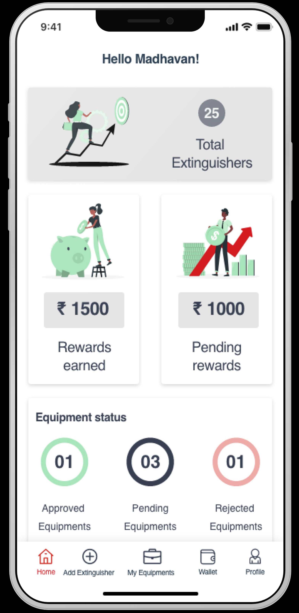

ABC Fire App Redesign
Revised Industry Project · Consumer App — exploratory work revisiting a 2020 project (Dec 2020 to June 2021) with Claude as a design collaborator.
The Problem
ABC Fire, a private fire equipment manufacturer, was running short of staff to scale their market for expanding fire hydrant products to new clients.
The Gamification Concept
As a user, one can add a new extinguisher photo through this app which captures the expiry of the hydrant. At the back end, the team processes a new entry to their prospective inventory and rewards the user for their activity.
AI as a Design Collaborator
As this project was conceived in 2020, I wanted to retake it and use Claude to redesign the application with an enhanced UI without losing the core functionality and USP of the app. Claude was used to pressure-test the original information architecture — every structural decision was mine; the AI accelerated the exploration given the gamification framework I had already prompted from the original product.
What Changed and Why
The home screen was restructured to foreground the gamified capture flow, giving the reward loop and inventory progress equal visual weight to the core scanning function — without changing a single underlying feature.

Before

After
Pilot Results
The product acquired 60 unique users who benefited from earning rewards through this gamified strategy. ABC Fire was able to maintain new prospective inventory that made them add 140+ new clientele to their customer base.
140+
New clientele added to ABC Fire's customer base
60
Unique users in the pilot cohort